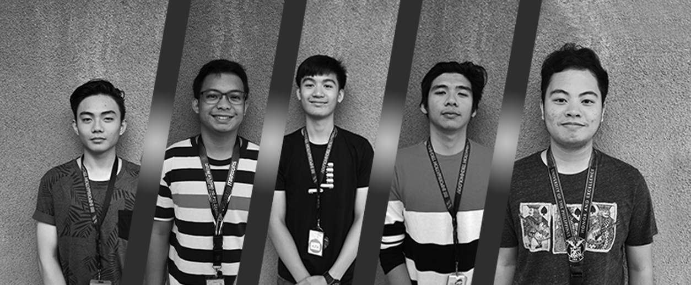

Introducing the Project: Guardian
AUP's exclusive website for students and faculty
Oct 28, 2019

Cavite, Philippines October 28, 2019 — A team in Adventist University of the Philippines launched a collaboration project called Project: Guardian. The Project's mission is to look after the students of AUP, to provide students a platform where they can express themselves and share their campus experience with other students. The project promises to help students not only in their classes but also give them information to make their time in AUP remarkable.
Founded by several student of Information Technology Department, they aim to provide the highest and advanced quality of website/application for the students.
At team's core, Project: Guardian operates on Imagination, creativity, dedication and hard work. We not only hope to help but to also inspire. The Project's team accepts challenges and faces them head on. The team's diversity allows us to create groundbreaking solutions for any situation. The Team behind the project includes Josiah Autor, Rondel Hallare, Jether De Leon, CJ Espinoza, Dustin Amoda
About Project: Guardian
Project: Guardian was founded in order for students to have a max-length of guidance through out their stay in AUP. Guardian's mission is to help students in every possible way like never before.
For more information, please visit ProjectGuardian.org
Press contact: ProjGuardian.Org@gmail.com